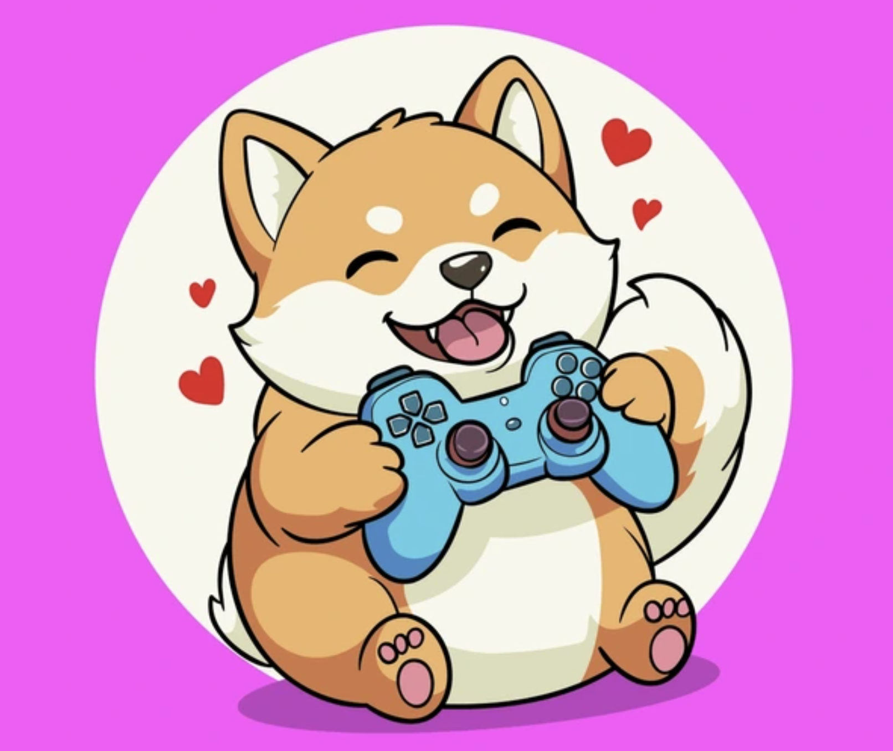

Origins 🌱
I entered the world of video games when I was 5.  I am sincerely grateful for all the amazing games that kept emerging throughout my childhood and teenage years — they accompanied me as I grew up, and I owe so much to the creators behind them. I loved exploring and adventuring in virtual worlds, and I was a dedicated player of many MMORPGs. Journey ✨
I started developing my own game during my undergrad 👾. Being an independent game developer has turned out to be far more challenging than I first imagined 🤯. To turn my ideas into reality, I kept learning new skills with every project 🔥. My current skill stack spans:
✨ Here are some of my works in AR/VR, VFX (visual effects), 3D modeling, and games: 3rd Prize, Beijing College Student Animation Design Awards, 2022 Grand Award, 3D Digital Innovation Design Competition, Beijing, 2023 Details:Created by: Liting Wen, Liwei Wang, Yingqi Tian, Zimo Yang, Zhenkun Zheng Tools: Unity, RealityCapture Intro: We conducted on-site 3D scanning and refinement of Lord Rabbit; developed multiple interactive features including card-based model switching, gesture-controlled rotation and scaling, and 3D model coloring. 2nd Prize, 3D Digital Innovation Design Competition, Beijing, 2023 Details:Created by: Yingqi Tian, Zimo Yang, Liting Wen, Liwei Wang, Zhenkun Zheng Tools: Blender, Unity Intro: We used Blender for 3D modeling and Unity for VR game development. Players explore the game world through a VR headset and controllers, engaging in interactions such as archery, foraging, NPC conversations, and treasure hunting. 3rd Prize, National College Digital Art & Design Awards (China), 2023 Details:Created by: Liting Wen, Zimo Yang Tool: Nuke Intro: We shot the real-world footage and crafted visual effects in Nuke, including camera tracking, chroma keying, compositing, etc. The short film envisions a speculative future, exploring the delicate interplay between humanity and nature. Details:Created by: Liting Wen Tool: Unity Intro: Users roam around a virtual gallery and interact with embedded videos and images via gaze interaction. I created it as a diary to document lovely moments of my life 💕. Some assets were from the Unity Asset Store. Present 🎁
Modern game development still involves a great deal of manual production work. I imagine a future where game creation becomes a form of pure artistic expression — where developers can focus on expressing their ideas, rather than being constrained by asset modeling, 3D world building, and other labor-intensive processes. (…AKA the parts that cause me the most suffering 😤) Now I'm at CMU pursuing research in 3D vision 💗. I hope my work can enable expressive, intelligent 3D assets and facilitate both virtual game creation and real-world applications. Origins 🌱
I started formal music training when I was 6. Though I'd been playing with sound since the day I arrived in the world 👶. 8 years of piano, 5 years of guzheng (Chinese zither), and occasional raids on my friends' practice rooms to learn random instruments (all forgotten now, but it was fun 😌). I also sang in a choir at one point. And since I was 9, my favorite singer has been Eason Chan. His music shaped my taste for Chinese pop. In undergrad, I also tried learning a bit of rap, thinking it would level up my debate performance. (Results remain inconclusive 🤷♀️.) Journey ✨
As I mentioned on my games page, I somehow found myself learning modern music-production tools. Now I create music with them, blending years of traditional instrument training with whatever modern audio techniques I've managed to acquire. Present 🎁
I hope music will always remain a natural, serendipitous surprise in my life 🎊. (== no concrete plan. Just letting music find me.) (Sometimes when I finish work early, I love taking a detour at moments like this 🌇 and playing an Eason Chan song about sunsets. The 2010 version is my favorite!)
|